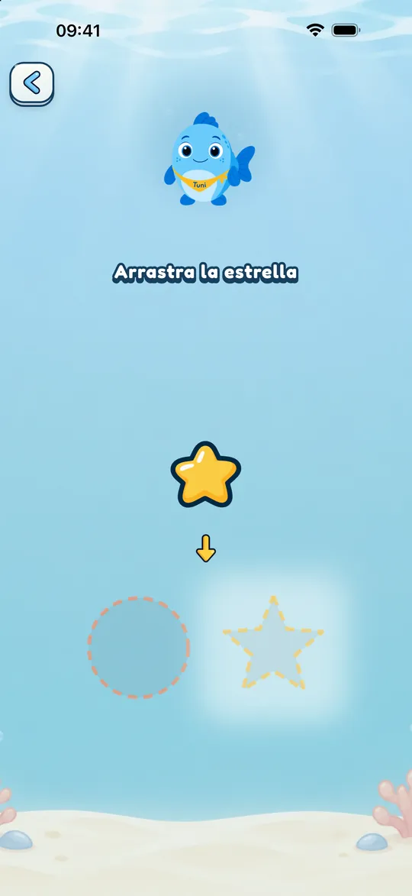
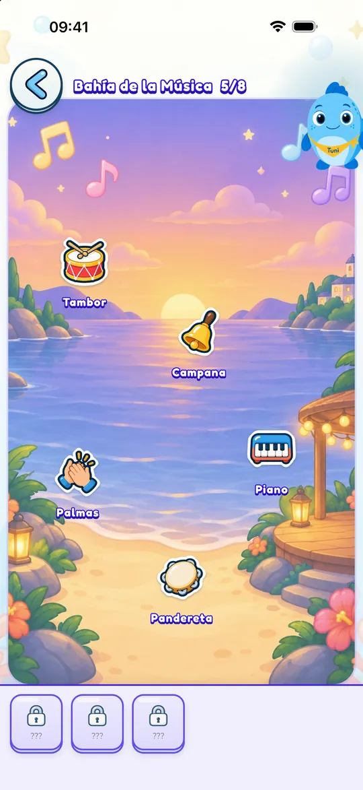
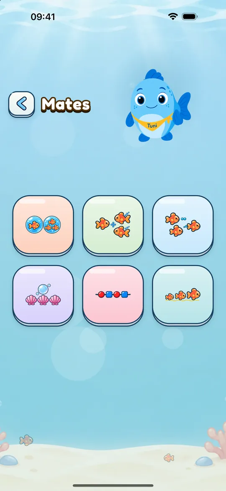

Para familias
Así es Mundo Tuni por dentro
Lo que hace tu peque cuando juega, lo que puedes ajustar tú y lo que pasa con sus datos.
Una visita a Mundo Tuni
El menú agrupa los mundos. Tu peque elige uno y ve una rejilla con sus elementos: los números, las letras, los colores… Al tocar uno, Tuni lo presenta y empieza una serie de juegos cortos.
Al terminarlos gana una estrella (y, en los seis mundos principales, una pegatina) y vuelve a la rejilla con su estrella nueva a la vista.

A su ritmo, sin presión
En Mundo Tuni no hay rachas, cuentas atrás ni ventanas que interrumpan el juego. Tuni anima y explica, pero no apura.
La dificultad se ajusta a la franja de edad que elijas: Peques (2 años), Medianos (3) o Mayores (4 a 6).

Tiempo de juego con un final tranquilo
Por defecto no hay límite. Si lo activas en la zona para adultos (5, 10 o 15 minutos de juego activo), al llegar al tiempo Tuni termina el juego, se despide y propone una idea para seguir sin pantalla.
Si quieres que siga un poco más, un adulto puede permitirlo.

Español, catalán e inglés
Puedes elegir el idioma de juego al empezar o cambiarlo en cualquier momento. El español tiene voz de España y de Latinoamérica.
En el rincón de Lola, quien juega en español o catalán aprende 24 palabras en inglés americano; quien juega en inglés, en español. Puedes ocultar este rincón.

Mates para los mayores
Para la franja de 4 a 6 años hay un mundo de matemáticas con seis juegos: comparar cantidades, sumar y restar con objetos, contar hacia atrás, continuar series y ordenar por tamaño o longitud.
Trabaja con cantidades hasta 10. No es un curso de operaciones escritas.

La zona para adultos
Para entrar hay que resolver un reto matemático pensado para adultos, que cambia según la franja de edad. Dentro están su progreso y los ajustes.
- Progreso por mundo y por concepto, sin comparaciones
- Tiempo de juego, idioma y franja de edad
- Subtítulos de Tuni y ayuda para daltonismo
- Restaurar la compra

Su privacidad
Mundo Tuni no pide el nombre, la fecha de nacimiento ni una cuenta del niño. El progreso se guarda en tu dispositivo y no se envía a nadie.
Las compras las gestiona RevenueCat con un identificador técnico seudónimo, sin tu nombre ni tu correo. Si un adulto activa el micrófono para repetir palabras con Lola, la voz se graba un momento en el dispositivo, se reproduce y se borra. Si la app se cierra a mitad, se borra al volver a abrirla. Nunca se envía.


Pruébala gratis
Descárgala para tu peque y probad juntos el contenido gratuito de cada mundo. Si os gusta, el resto se desbloquea con un único pago.